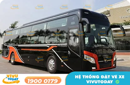
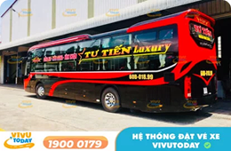
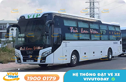
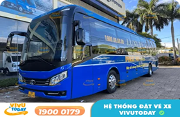
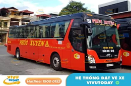

Tuyến đường

Đặt vé xe tuyến Bến xe Ngã Tư Ga đi Bắc Giang
Đặt vé xe tuyến Bến xe Ngã Tư Ga đi Bắc Giang

Đặt vé xe tuyến Sài Gòn đi Rạch Giá – Kiên Giang
Bạn đang tìm kiếm phương tiện di chuyển thuận tiện và nhanh chóng giữa Sài Gòn và Kiên Giang

Tuyến Sài Gòn đi Cam Ranh Khánh Hòa
Top 10 nhà xe tuyến Sài Gòn đi Cam Ranh Khánh Hòa được đánh giá...

Đặt vé xe Bình Thuận đi Cam Ranh – Khánh Hòa
Bạn đang tìm kiếm chuyến xe chất lượng trên tuyến đường Bình Thuận...Top 8 nhà xe từ Bến xe Gia Lai đi Sài Gòn
Bạn đang tìm kiếm một chuyến xe chất lượng cao từ Bến xe Ngã Tư...Vé xe từ bến xe phía nam Buôn Ma Thuột đi Sài Gòn
Bạn đang tìm kiếm phương tiện di chuyển thuận tiện và nhanh chóng giữa Sài Gòn và Kiên Giang

Đặt vé xe tuyến Hà Nội đi Vân Đồn – Quảng Ninh
Top 10 nhà xe tuyến Sài Gòn đi Cam Ranh Khánh Hòa được đánh giá...Đặt vé xe từ Vũng Tàu đi Sân bay Tân Sơn Nhất
Bạn đang tìm kiếm chuyến xe chất lượng trên tuyến đường Bình Thuận...<
1
2
3
4
...
149
>